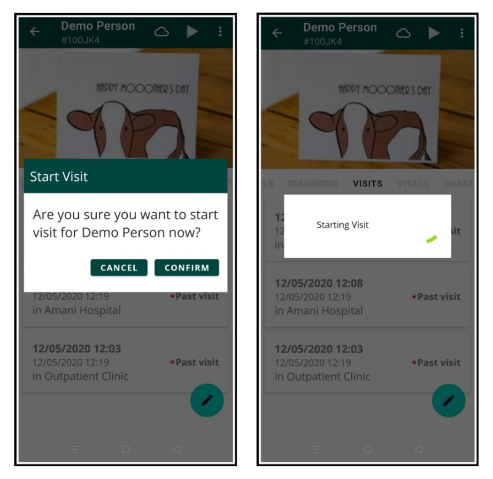
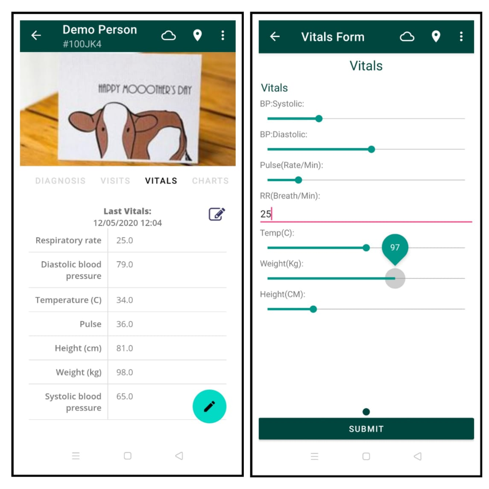
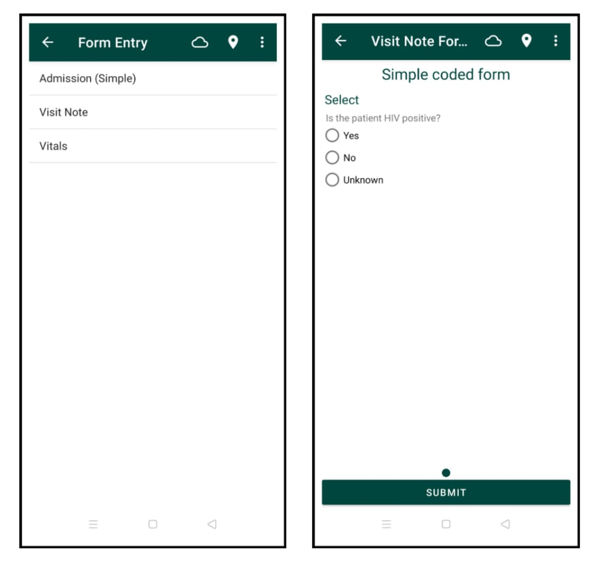
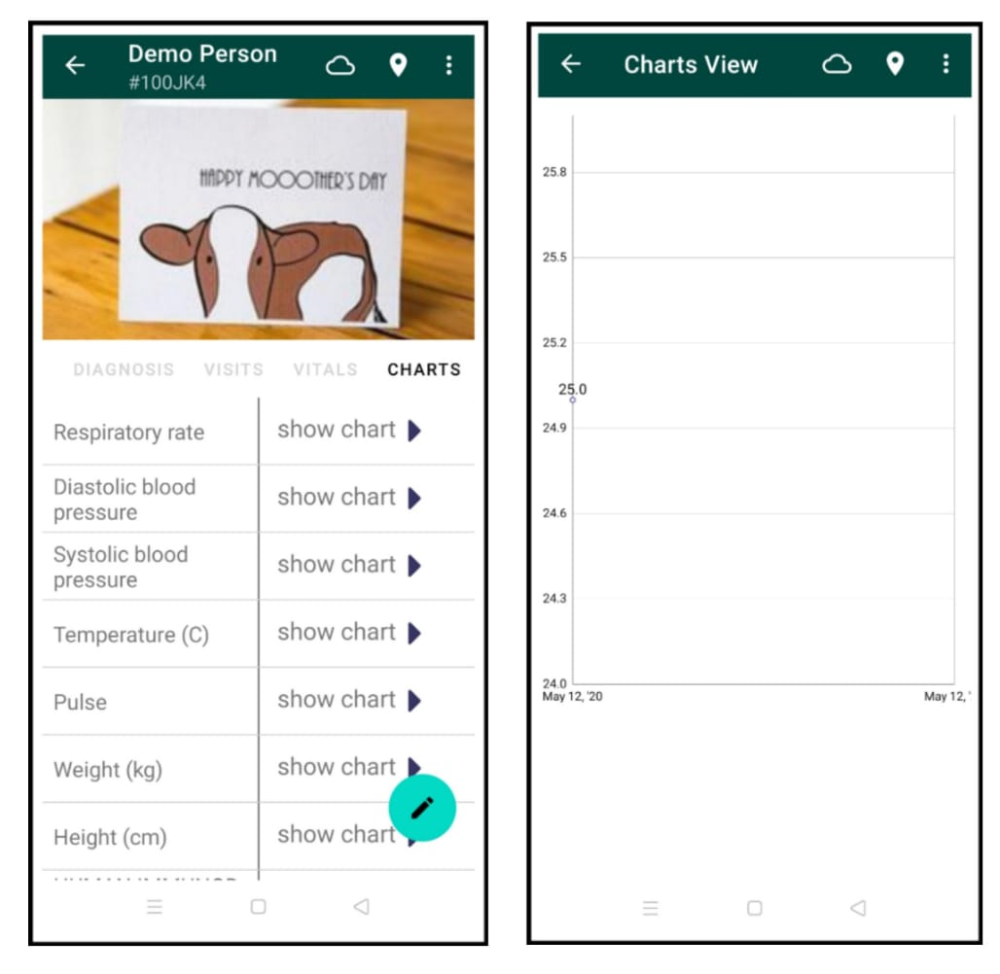
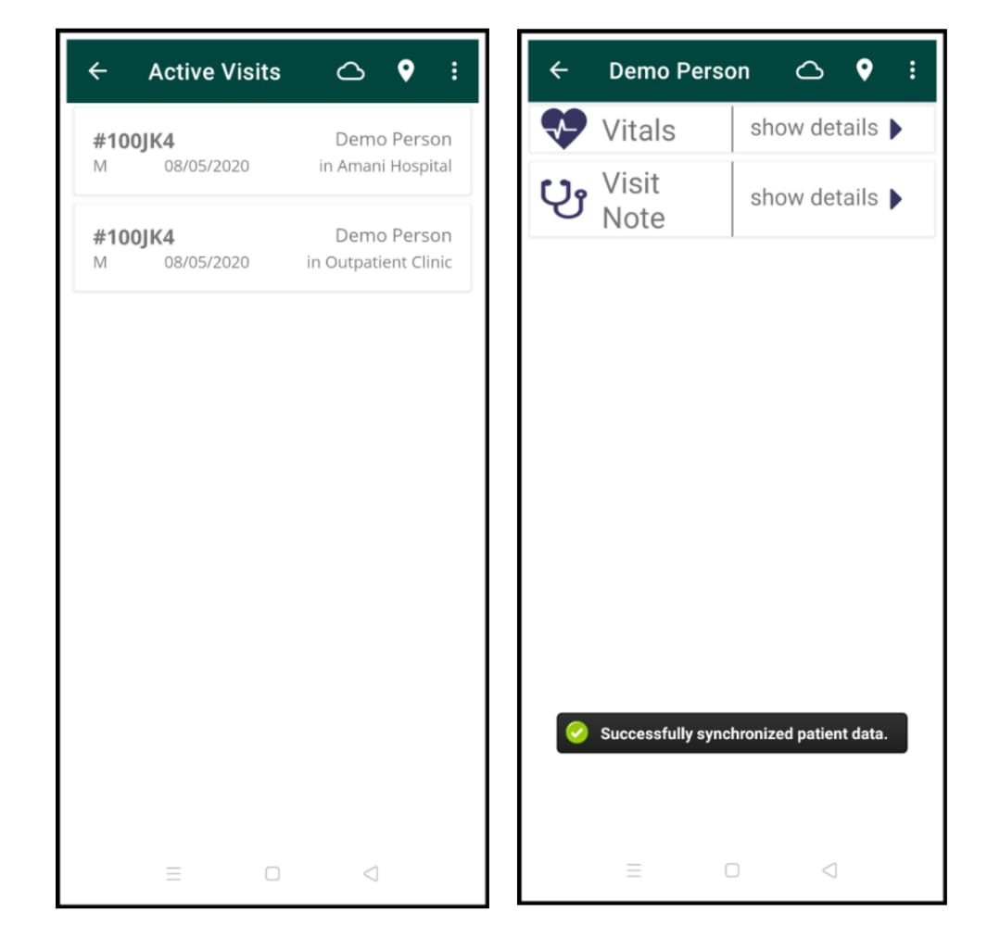

Patient Activity
Diagnosis
When viewing a patient, you are able to see illnesses or diseases a patient suffers from. Simply head over to the Diagnosis tab to see the patient's list of illnesses or diseases.
Visits
A Visit is a time period when a patient is actively interacting with the healthcare system, typically at a location. In most cases with OpenMRS, this is a time when a provider is interacting actively with a patient. Visits are where encounters take place; which are used to record a patient's vitals, diagnose a patient and a few other things.

To start a visit to a patient, simply go to the Visits tab and click the 'start' icon in the action bar. You can see which patients are currently visited by heading to Active Visits from home. Now you can choose to end the visit by clicking on the visit, clicking the menu icon and clicking End Visit.
Vitals
During a visit, you are able to record a patient's vitals (commonly known as biometric data). To capture a vital, simply go to the Vitals tab and click on the 'note' icon. From here, you can start to input the patient's biometric data. When done, press the Submit button at the bottom. You can also cancel capturing a vital by using your back button or the 'up' icon in the action bar. After submitting a vital, you will see an updated patient vitals form at the vitals tab.

Encounters
Encounters usually take place during a visit, however they may also stand alone. Think of an encounter as any collection of data inputted to the EMR system. Generally speaking, every time you enter a form in OpenMRS this creates an Encounter.
In the Android client, there is a collection of encounters readily made to input data to patients during their visits. This is done in the Form Entry section. To see the process of creating a form (an encounter) in the client, go to the Form Entry section from home, then select a patient (preferably a patient on a visit).

Let's create a Visit Note form to note down experiences regarding the patient's visit. Answer the questions regarding the patient and click 'Submit' (You will see this form in the patient's visit page later on).
Charts
Finally, you may see a graph for patients, measuring height, weight and other observations corresponding to recorded patient vitals in the Charts tab.

Now, when heading to Active Visits and selecting the example patient, you will hopefully see that a Vitals form and a Visit Note form are successfully recorded during the patient's visit.

To learn more about the OpenMRS information model, take a look at this guide for developers.